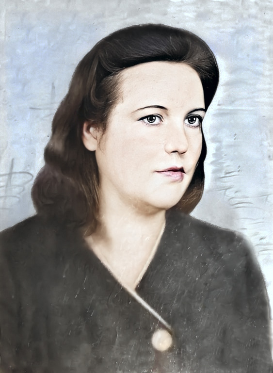
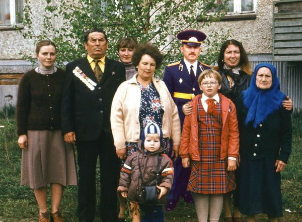

Моя мама родилась в селе Окатово. В конце 20-х рухнула её молодая семья и она переехала в г.Курлово, где прошло её трудное детство в семье пьющего отчима, тяжёлая юность...В годы войны мама готовилась на фронт в качестве снайпера, но когда ей исполнилось 18 лет в 1943г. ей заменили военный фронт трудовым; военный комиссар (со слов мамы) отложил её дело, сказав что таким красивым на войну нельзя. Её направили на Мизиновские торфоразработки, где через полгода она чуть не умерла от малярии, после чего её перевели в леспромхоз пилить дрова, но и там она серьёзно простудилась. В 1944г. ослабленную болезнью маму направили в контору леспромхоза, где она проработала остаток военных лет.
В 1946г. пленила моего отца, приехавшего в Курлово в отпуск после войны, так как он занимался разминированием Балтики, то его не отпускали из Армии до 1948г..
Работая в конторе машинисткой, приобщилась к бухгалтерии, которой и посвятила всю свою жизнь до конца застойных 70-х лет, когда начавшееся предпринимательство руководителей вынудило её покинуть любимую работу.
Она, ворошиловский стрелок, всю жизнь считавшая народные копейки, не захотела влиться в первую волну предпринимателей, которые уже тогда приближали, как могли, рыночную жизнь в России .
Фото мамы, 1948г., накануне свадьбы.
Закончила мама свою трудовую деятельность практически в той же должности, что и начинала - рабочей на заводе.
9 мая 1985г. я взял свою семью и поехал на праздник к родителям в Гусь-Хрустальный, отец только к этому празднику получил небольшую квартиру со всеми удобствами в пятиэтажке стандартного городского дома.

На фото - наша семья и мама искренне радовалась простому миру, пусть и с очередями в магазинах.9 мая 2005г. я позвонил маме и поздравил с праздником Великой Победы. Она, поблагодарив меня за звонок, сказала, что война пришла к нам за грехи. Пожелала мне хорошего здоровья и усомнилась, что через 60 лет колонна нынешних победителей на Мерседесах пройдёт по Красной площади.
Я с ней согласился и мы вместе погоревали, что люди вновь накапливают свои грехи, чтобы сжечь их в топке очередной войны.